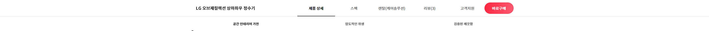

깨끗함의 차원이 다른 직수 LG 퓨리케어 상하좌우 정수기
실용적인 디자인
LG 오브제 컬렉션
감각적인 색을 더한 주방
퓨리케어 상하좌우 정수기 오브제 컬렉션은 주방 한 켠에 설치하는 것만으로도 공간의 분위기를 감각적으로 변화시킵니다
취향과 인테리어에 맞춰 세련미를 더하는 3가지 컬러로 만나보세요
영상 or 이미지 01-1
영상 or 이미지 01-1
99.99% 안심 살균
국내 최초 상하좌우 무빙 출수탭
공간을 고려한 설계
편의를 생각한 배려
저마다 사는 곳이 다르듯 주방의 크기도 다르기 마련 그래서 상하좌우 자유로운 무빙 출수탭으로 공간 활용성을 높였습니다
컵이나 냄비에 따라 높낮이도 자동 조절돼 뜨거운 온수를 받을 때 특히 안전하죠
영상 or 이미지 02-1
영상 or 이미지 02-1
자유로운 맞춤 케어
고온 살균 & STS 직수관
초미세 세균까지
99.99% 남김없이
정수기 청결은 정수기에게 믿고 맡기세요 열과 부식에 강한 스테인리스 직수관은 물론 출수구와 필터, 코크까지 고온수로 99.99% 정밀하게 살균해 줍니다
주기적인 자동 살균 외에도 원할 땐 언제든 셀프 살균도 가능하죠
영상 or 이미지 03-1
영상 or 이미지 03-1
99.99% UVnano 안심살균
한 시간에 한 번씩
매일매일
외부에 노출된 코크는 물이 직접 닿는 곳인 만큼 그 어느 곳보다 세심한 관리가 필요하죠 UVnano 안심살균 시스템은 이러한 걱정을 씻은 듯이 날려 줍니다
별다른 설정 없이도 한 시간에 한 번씩 자동 살균을 진행해주니 24시간 언제든 안심하고 마실 수 있죠
영상 or 이미지 03-2
영상 or 이미지 03-2
4단계 올 퓨리 필터 시스템
엄격하게 정수된
급이 다른 수질
새롭게 업그레이드된 4단계 필터 시스템은 무결점에 가까운 정수 능력을 발휘합니다
물속 건강한 미네랄은 그대로 유지하면서 중금속 9종, 박테리아, 노로바이러스까지 99.99% 완벽한 수준으로 제거해 아이들 이유식이나 분유에도 바로 사용할 수 있죠
영상 or 이미지 03-3
영상 or 이미지 03-3
기타
음성 안내
알아서 척척 알려주는
똑똑한 목소리
필터 수명은 얼마나 남았는지 살균은 며칠 주기로 해야 하는지 똑똑한 음성 안내가 때에 맞춰 다정하게 알려드려요
여기에 필터 교체나 살균 중간중간 진행 과정도 친절하게 브리핑 해주죠
영상 or 이미지 04-1
영상 or 이미지 04-1
부가 기능
버튼 하나면 셀프 케어 끝
남녀노소 누구나 쉽게 관리할 수 있도록 필요한 기능을 보기 쉽게 담았습니다
출수구 살균, 직수관 살균도 버튼 하나로 손쉽게 진행하고 출수 용량도 120, 250, 500, 1000mL 세밀하게 조절할 수 있죠
영상 or 이미지 04-2
영상 or 이미지 04-2
LG ThinQ
한눈에 보는
우리 집 물 습관
평소 물 사용 습관은 물론 에너지 사용량과 자동 살균 설정까지 LG ThinQ 앱 하나로 한눈에 체크하고 관리하세요
집에서든 밖에서든 원격으로 손쉽게 제어할 수 있죠
영상 or 이미지 04-3
영상 or 이미지 04-3
자가관리/방문관리
취향맞춤 케어 서비스
이제 필터 교체부터 구매까지 원스톱으로 직접 해결해 보세요 청정램프와 음성 안내, ThinQ 앱으로 교체 주기를 신속히 체크하고 퀵 체인지 방식으로 손쉽게 교체할 수 있죠
방문 관리를 신청하면 보다 꼼꼼한 케어를 원하는 날짜, 시간에 편하게 받을 수 있어요
영상 or 이미지 04-4
영상 or 이미지 04-4
고지 사항 확인하기
-
1.제목
- 내용
- 내용2
-
※제품 이미지 및 특장점 등에는 이해를 돕기 위해 연출된 이미지가 포함되어 실제 제품과 차이가 있을 수 있으며, 사용환경에 따라 차이가 있을 수 있습니다.